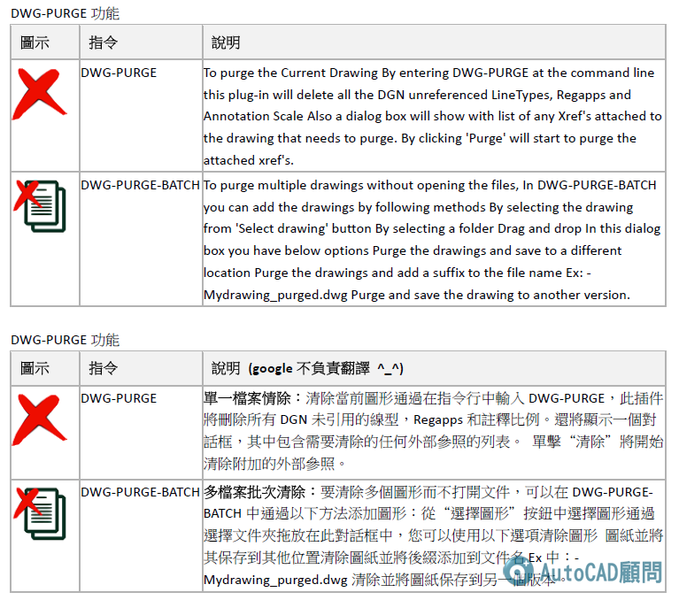
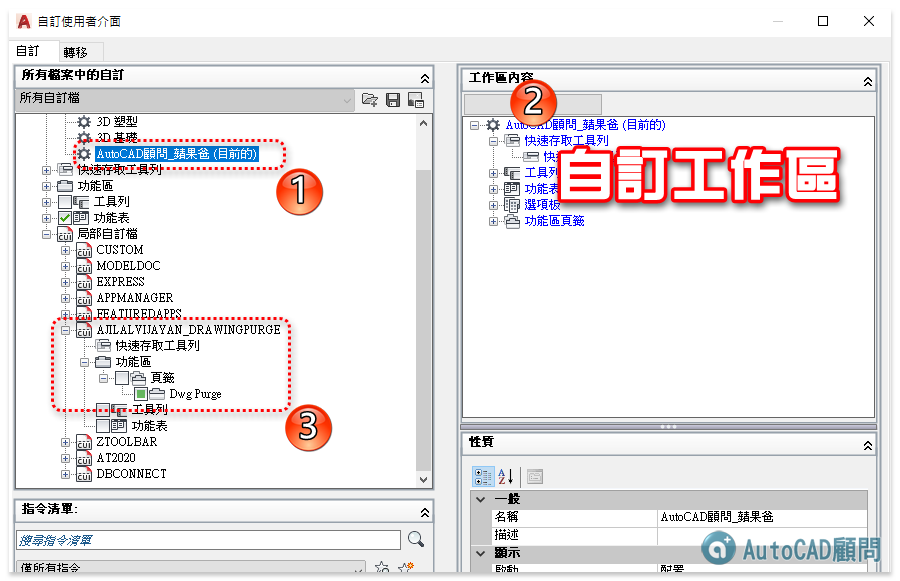
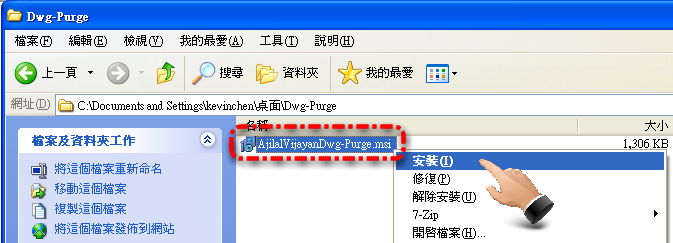
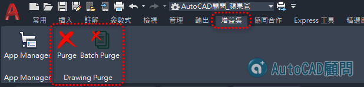
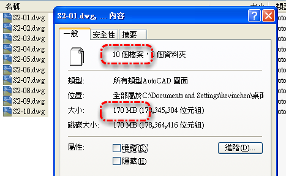

<div> 關於DWG檔案異常變大原因有很多種，近期發現「<strong>DGN線型</strong>」會造成檔案變大！<br>而這個問題遠超過之前的異常狀況，一張圖可能達到100mb以上，正常清除完畢後剩下不到1mb<br>現在已經有嚴重災情傳出，請大家幫忙告訴大家要正視這個問題，不然會影響傳染彼此DWG圖檔～<br> 像我就開DWG檔開到當機...<br><br><h3>■私房教學2課程，第41個範例有詳細解說👇</h3><a href="https://www.autocad-tw.com/t24938-topic">[訂購]AutoCAD 2021 私房教學2_光碟課程/線上課程</a><br><br> 雖然說「<strong>Autodesk官網</strong>」有釋出修復程式(僅支援2012以上版本)，但是安裝步驟稍顯複雜（方式請參考上述 DGN 線型亂碼 討論文）。<br>最近終於搜尋到「<strong>Autodesk Exchange 應用程式網站</strong>」，該網站有免費分享「<strong>Dwg-Purge</strong>」外掛程式，此功能也是只有支援2012以上版本。<br>除了可以有效處理清除過多的「DGN 線型」，而且還可清除「註冊程式」及「比例清單」，大家趕緊來試試吧！<br><a href="https://servimg.com/r/6712315966/2020_114.png"></a><br><br><a href="https://servimg.com/r/6712315966/2020_115.png"></a><br><br>■<strong>使用教學</strong>：Autodesk Exchange 應用程式網站<br><a href="https://www.autocad-tw.com/t14107-topic">https://www.autocad-tw.com/t14107-topic</a><br><br><strong>☆</strong>置於如何判定檔案為異常放大，使用者可以將圖檔物件只留下一條線，再來使用「PURGE」或「WBLOCK」，檔案若還是很大則表示DWG檔案異常。<br><strong>☆</strong>2011以下版本如何處理DGN線型問題，使用者可以使用舊版(建議2008以下版本)，將圖檔使用「WBLOCK」，DWG檔案即可正常縮小。<br><br>補充：如果安裝完畢功能區沒有顯示按鈕，請試試自訂工作區開啟<br><a href="https://servimg.com/r/6712315966/2020_181.png"></a><br><br><hr><br>▼<strong>解決方法</strong>：<br><strong>步驟一</strong>：官方網站下載「Drawing Purge」，「AjilalVijayanDwg-Purge.msi」程式檔。<br>http://apps.exchange.autodesk.com/ACD/zh/Detail/Index?id=appstore.exchange.autodesk.com%3adrawingpurge_windows32and64%3aen<br><a href="https://servimg.com/r/5812315966/0211.png"></a><br>■備用載點6.0版(2016-06-03更新*回覆可見*)： https://www.dropbox.com/s/78lsfx366eb143p/AjilalVijayanDrawingPurge.zip?dl=0<br>■備用載點7.0版(2017-07-05更新*回覆可見*)： https://www.dropbox.com/s/m4j5ou1kzzhfybj/AjilalVijayanDrawingPurge-7.0.zip?dl=0<br>■備用載點8.3.0版(2020-06-02更新*回覆可見*)： https://app.box.com/s/nf1czy2r2cxkp9rmnp2dsl72cb1bngry<br><br><strong>步驟二</strong>：安裝執行（建議關閉AutoCAD）<br><a href="https://servimg.com/r/5812315966/0311.png"></a><br><a href="https://servimg.com/r/5812315966/0411.png"></a><br><br>步驟三：新版安裝完畢，在「功能區」切換到「增益集」面板，即可使用該應用程式。<br><a href="https://servimg.com/r/6712315966/2020_113.png"></a><br>PS:舊版安裝完畢，在「功能區」切換到「外掛程式」面板，即可使用該應用程式。<br><a href="https://servimg.com/r/5812315966/0511.png"></a><br>※說明：程式提供二個「<strong>DWG-PURGE指令</strong>」單檔處理及「<strong>DWG-PURGE-BATCH指令</strong>」多圖檔處理。<br><br><strong>步驟四</strong>：10個異常DWG檔，大小共170mb<br><a href="https://servimg.com/r/5812315966/0612.png"></a><br><br><strong>步驟五</strong>：多圖檔請使用「<strong>DWG-PURGE-BATCH指令</strong>」<br><a href="https://servimg.com/r/5812315966/0712.png"></a><br><br><strong>步驟六</strong>：選擇圖檔 → 轉為2004格式 → 共10檔案 →「<strong>Start</strong>」<br><a href="https://servimg.com/r/5812315966/0812.png"></a><br><br><strong>步驟七</strong>：清除了過多的「線型(DGN)」及「註冊程式」<br><a href="https://servimg.com/r/5812315966/0912.png"></a><br><br><strong>步驟八</strong>：10個DWG檔，大小縮小為5mb<br><a href="https://servimg.com/r/5812315966/1012.png"></a><br><br><strong>影片展示：</strong><br><iframe src="https://www.youtube.com/embed/-R5Oqh5JzB0" loading="lazy" allowfullscreen></iframe><br><br><hr><br>▼<strong>相關主題</strong>：<br>關於AutoCAD DWG檔案異常容量變大<br><a href="https://www.autocad-tw.com/t813-topic">https://www.autocad-tw.com/t813-topic</a><br><br>[教學]錯誤的圖層過濾器-造成檔案異常容量變大<br><a href="https://www.autocad-tw.com/forum-f7/topic-t811.htm">https://www.autocad-tw.com/forum-f7/topic-t811.htm</a><br><br>[教學]錯誤的註解比例(比例清單)-造成檔案異常容量變大<br><a href="https://www.autocad-tw.com/forum-f7/topic-t812.htm">https://www.autocad-tw.com/forum-f7/topic-t812.htm</a><br><br>[已解決]檔案變大( DGN 線型亂碼)<br><a href="https://www.autocad-tw.com/t16210-topic">https://www.autocad-tw.com/t16210-topic</a></div>
